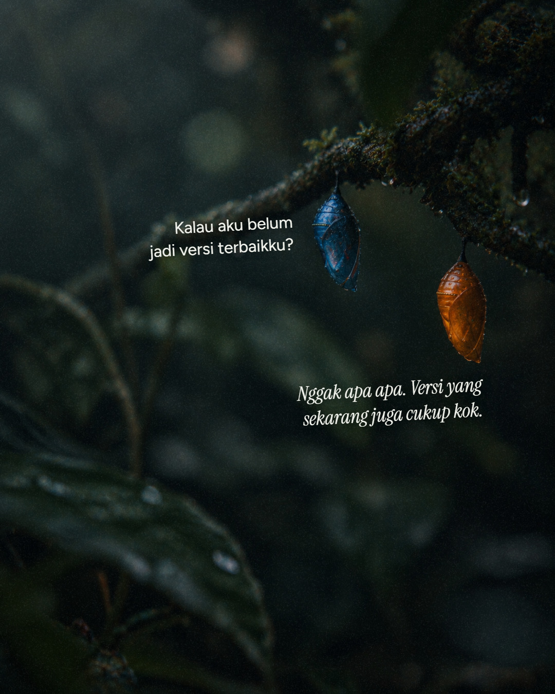
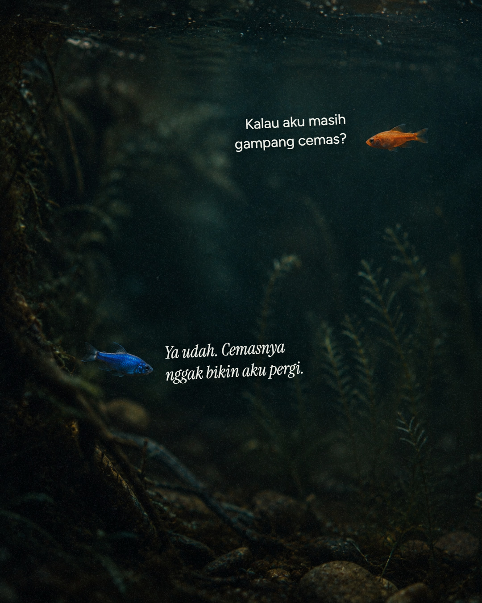
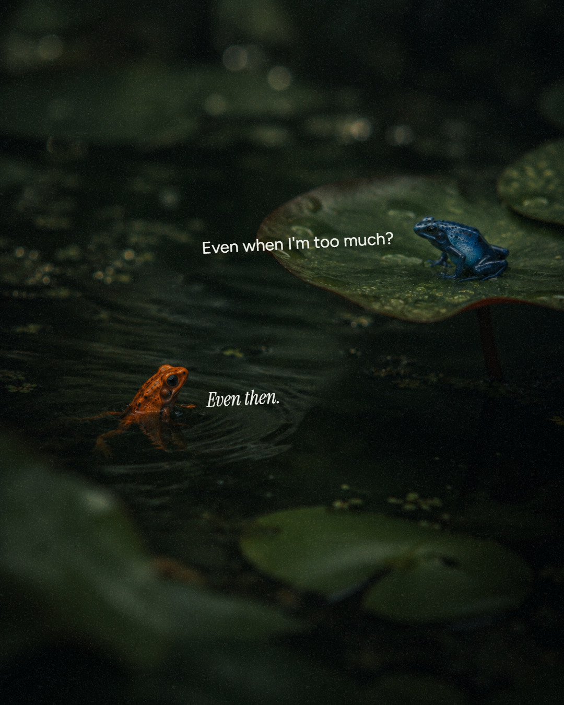
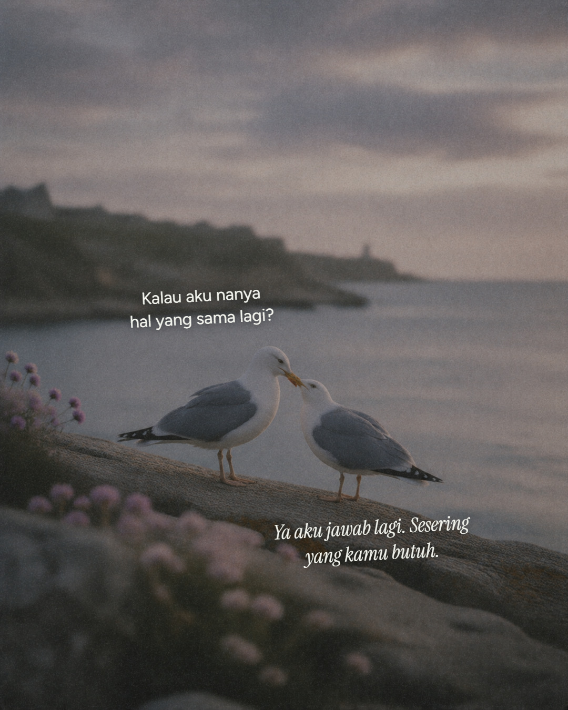
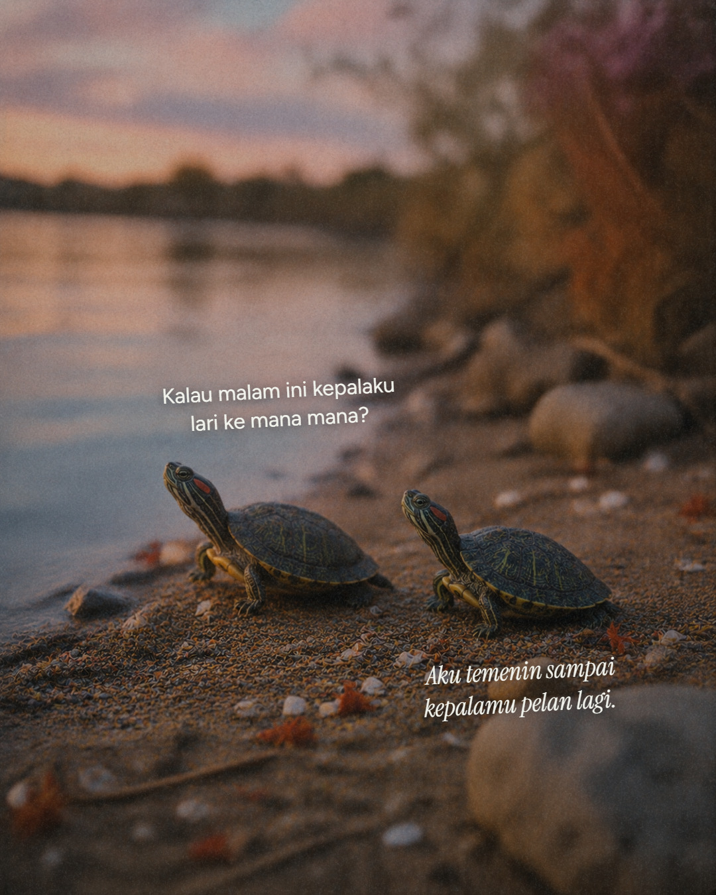
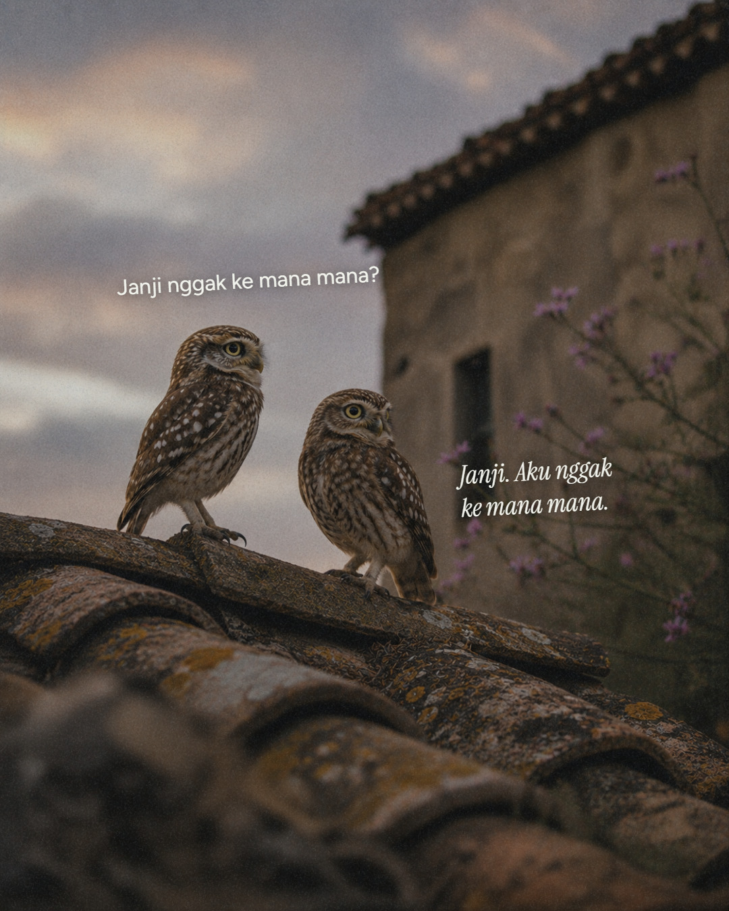
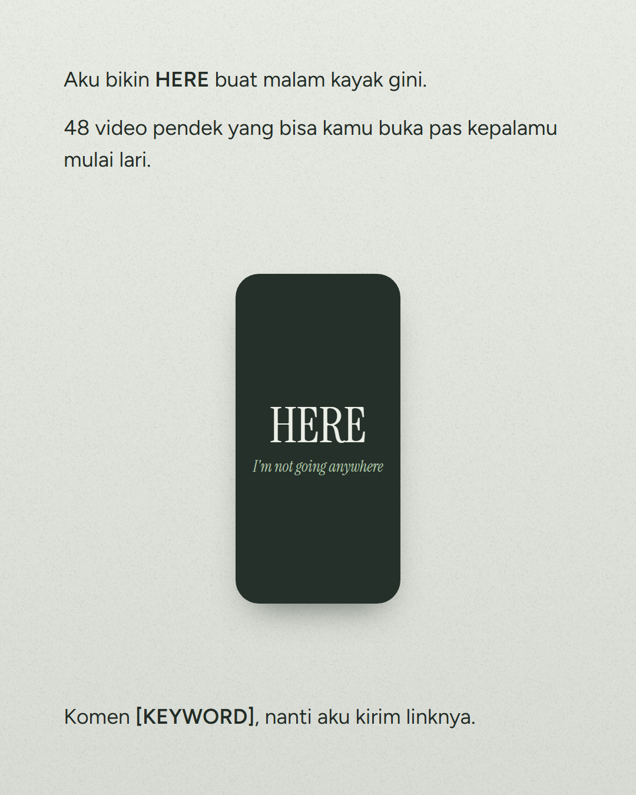
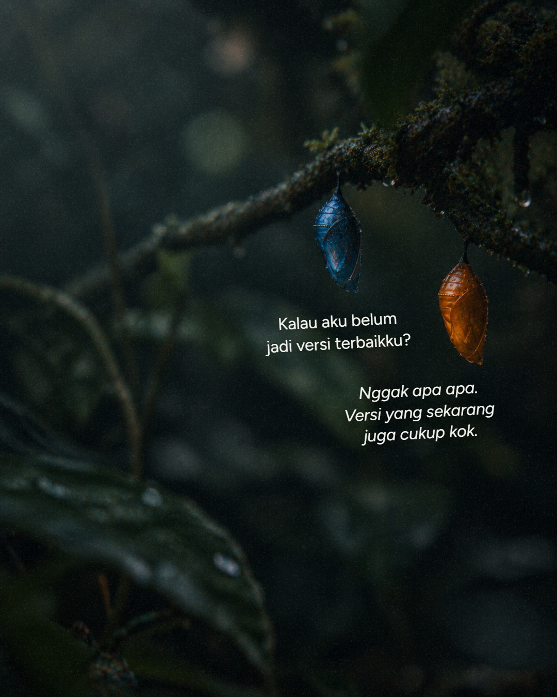
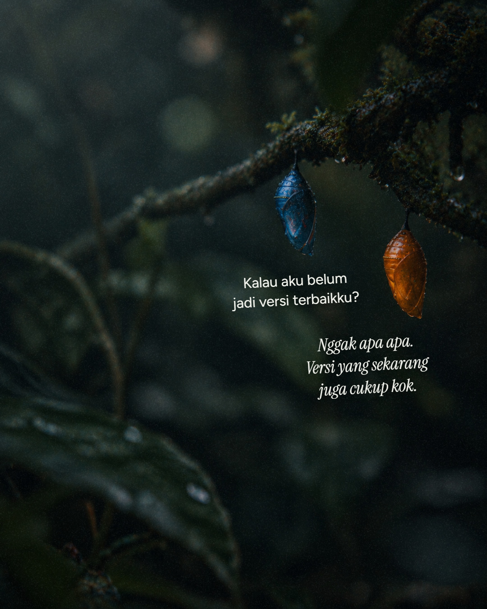

Revisi 2: font opsi B (pilihanmu), teks boleh di kiri, kanan, atas, atau bawah objek sesuai ruang kosong di foto, dan lebar teks maksimal 44% supaya kalimat panjang melebar dulu sebelum turun baris. Revisi 1 (A vs B) ada di bawah sebagai pembanding.







| # | Foto | Kalimat cemas | Jawaban penenang |
|---|---|---|---|
| 1 | kepompong | Kalau aku belum jadi versi terbaikku? | Nggak apa apa. Versi yang sekarang juga cukup kok. |
| 2 | ikan | Kalau aku masih gampang cemas? | Ya udah. Cemasnya nggak bikin aku pergi. |
| 3 | katak | Even when I'm too much? | Even then. |
| 4 | camar | Kalau aku nanya hal yang sama lagi? | Ya aku jawab lagi. Sesering yang kamu butuh. |
| 5 | kura-kura | Kalau malam ini kepalaku lari ke mana mana? | Aku temenin sampai kepalamu pelan lagi. |
| 6 | burung hantu | Janji nggak ke mana mana? | Janji. Aku nggak ke mana mana. |
| 7 | produk | Aku bikin HERE buat malam kayak gini. 48 video pendek yang bisa kamu buka pas kepalamu mulai lari. Komen [KEYWORD], nanti aku kirim linknya. | |

